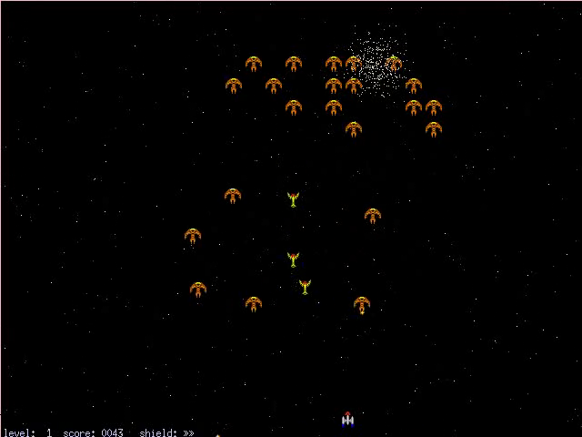

XGalaga++
This article describes about XGalaga++ version 0.8.3.
Description
XGalaga++ is yet another XGalaga. It improves graphics.
XGalaga++ is under development. It has no sound now.
Screencasts
You can decrease graphics effects with the key - (minus). The following screencast shows detail decreased XGalaga++. You can see that there is no star, and that enemries do not explose.
Technique (?)
Your space ship does not collide with enemries. You can pay attention only to fire.